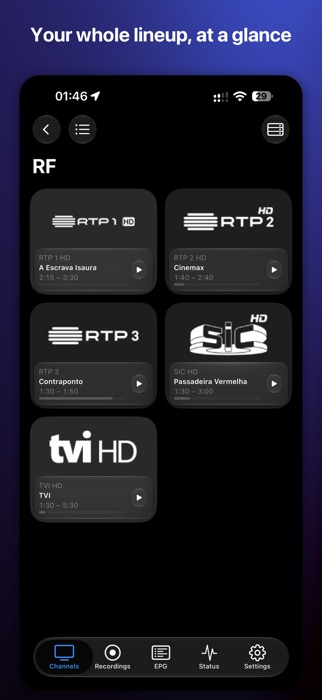
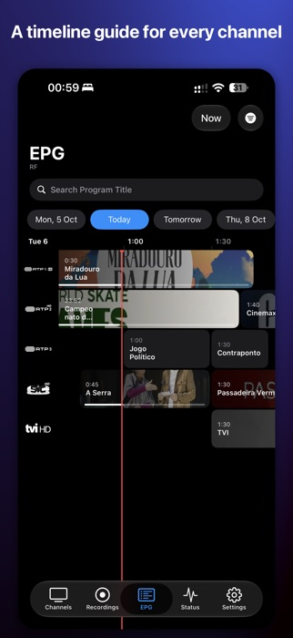
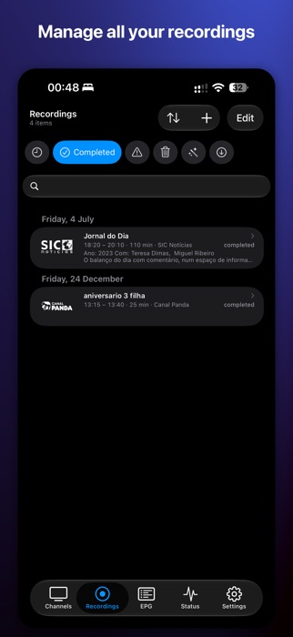
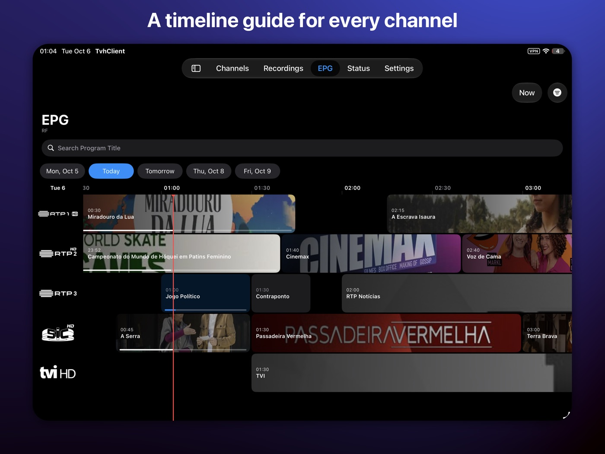
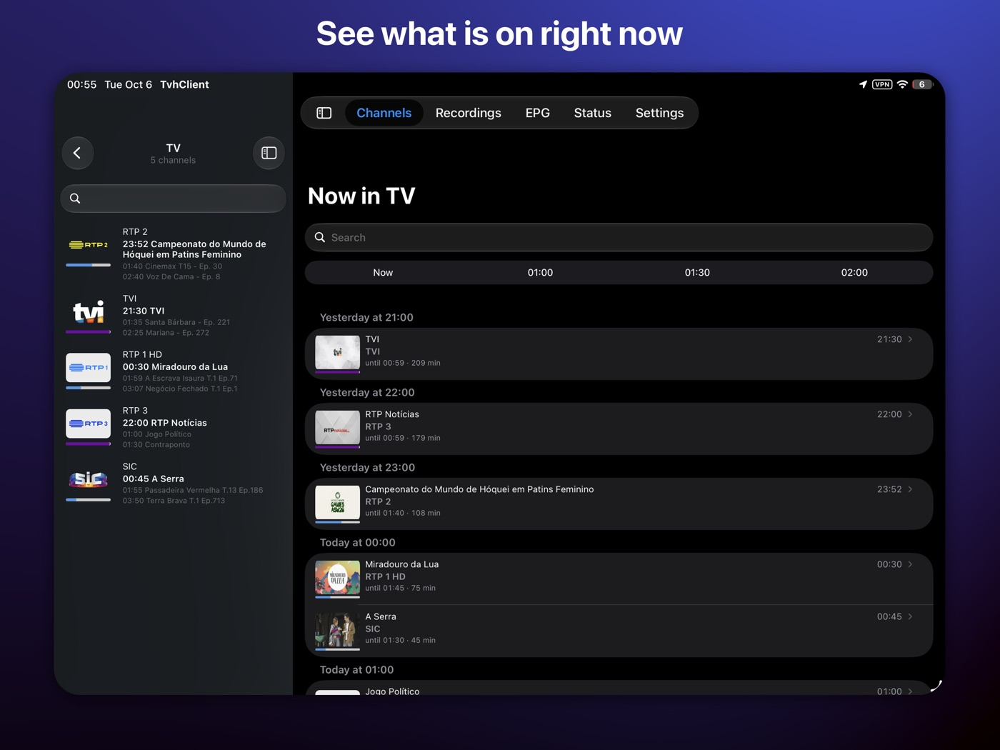

Keep TvhClient alive
TvhClient has been around for many years and is built in my spare time. If it earns a place on your devices, a donation helps keep it going. Thank you!

Your tvheadend server, in your pocket and on your TV. Watch live channels, browse the guide, and schedule, manage and play recordings on iPhone, iPad and Apple TV.



Built for people who run their own TV server. Works over your home network or from anywhere.
Channel lists and cards with now / next, progress bars and search. Tap a logo and it plays. Timeshift, tracks, channel switcher and Picture in Picture in our own player.
A timeline EPG with channels down and time across. Filter by tag or channel, search by title, tap a programme for details or hold to play or record.
Upcoming, completed, failed, removed and AutoRec rules. Add and edit with the same options as the web UI. Play any recording, seekable.
Copy recordings to your device and watch them offline, on the plane or the train.
A notification before a programme starts. Find the same title elsewhere with “See Again”.
Subscriptions, tuner inputs, networks, muxes, services and the server log, right in the app.
mpv or VLC behind one player, switchable on the fly, with deinterlacing and hardware decoding.
Shortcuts and Siri for your channels, widgets, and live audio in the car.
Add several servers, find them on your network with Bonjour, and keep your playback position in sync through iCloud.


The big screen, done properly. The same tvheadend library, designed for the couch and the Siri Remote.
Channel grids with logos and what is on, a quick channel switcher and a full-screen player.
Browse the EPG, schedule recordings and play them, all by remote.
“Watch on TV” sends what you are watching to the Apple TV, and your iPhone becomes the remote.
Servers and playback positions follow you between iPhone, iPad and Apple TV through iCloud.
TvhClient is made in spare time by one person. Found a bug, or want a feature? Tell me.
TvhClient has been around for many years and is built in my spare time. If it earns a place on your devices, a donation helps keep it going. Thank you!